Modelling Wildlife Corridors
Spatial Analysis of Topographic and Landscape Barriers for Roe Deer (Capreolus capreolus) in Schaffhausen
ZHAW - Institute for Computational Life Sciences
2025-12-19
1. Introduction
The Challenge: Habitat Fragmentation
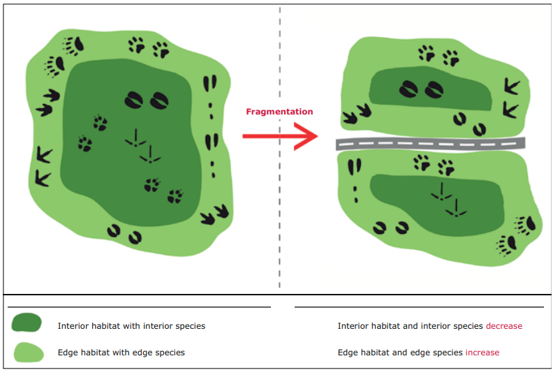
Focal Species: Capreolus capreolus
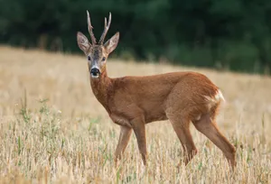
The Roe Deer, a species adapted to forest edges but highly sensitive to disturbance.
Source: Encyclopædia Britannica
Project Objectives
Develop Resistance Surface
Create a detailed resistance surface
Model Connectivity
Perform a Least-Cost Path (LCP) analysis to compute potential wildlife corridors
Identify Conflicts
Analyze the resulting model to identify and map critical bottlenecks
2. Methodology
Study Area

The study perimeter: Canton Schaffhausen (yellow) surrounded by the 1000m analysis buffer (red).
Resistance Surface Creation
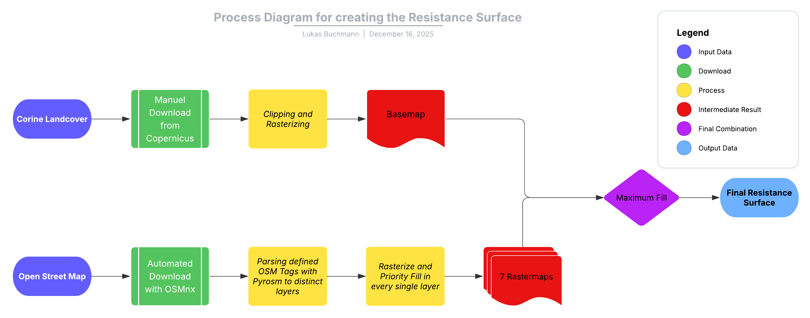
Schematic workflow of the resistance surface generation, illustrating the integration of biological land cover data (CLC) with anthropogenic infrastructure barriers (OSM).
Least Cost Path Analysis
- Step 1: Grid Sampling (2km spacing).
- Step 2: Node Validation (Filter for Habitat Cost = 1).
- Step 3: Pairwise Least-Cost Path (LCP) Simulation.
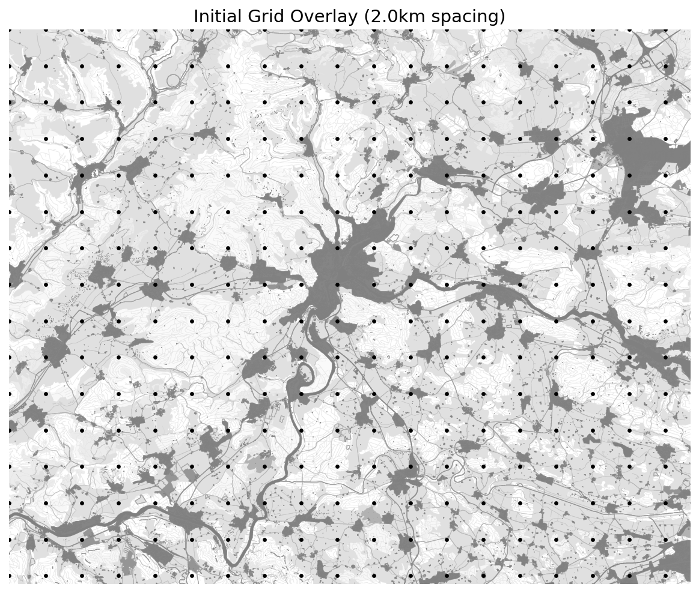
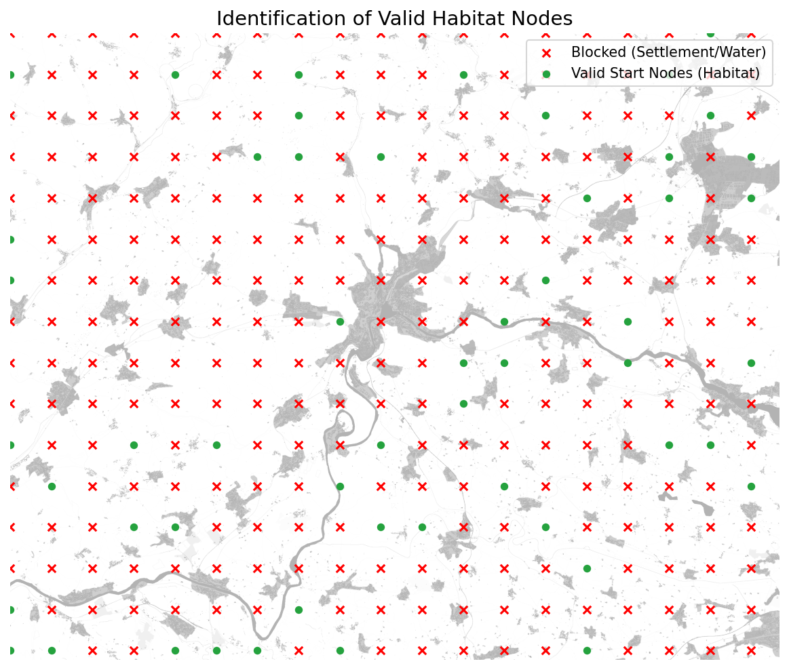
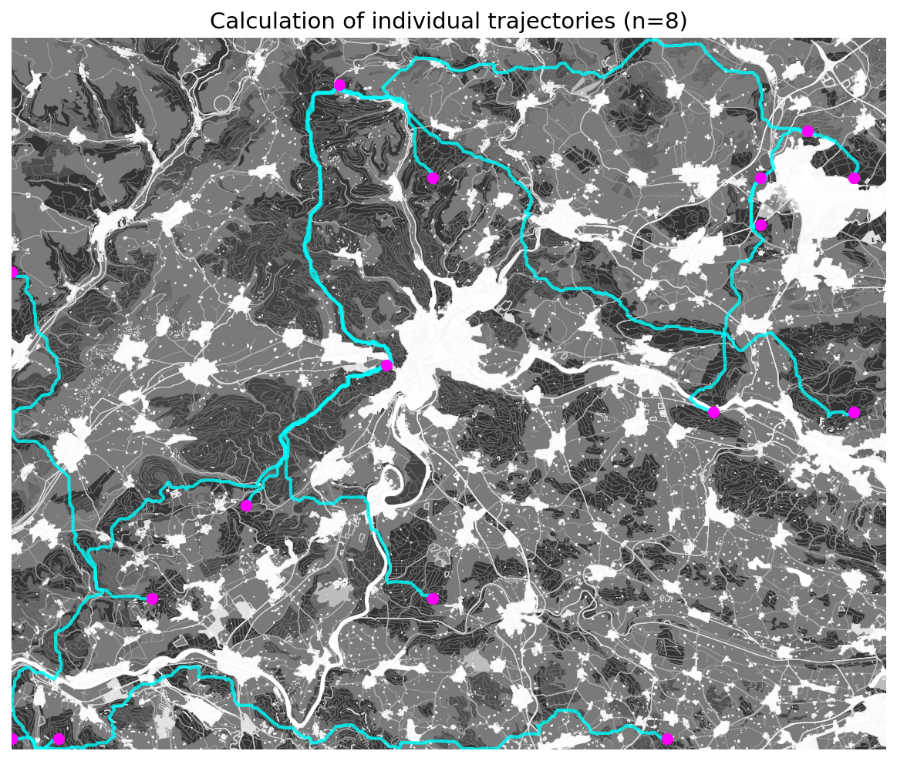
Algorithm & Function
Library: scikit-image (Python)
Module: skimage.graph
Function: MCP_Geometric
“Calculates the least-cost distance through a raster cost surface allowing for diagonal movement.”
3. Results
Resistance Surface
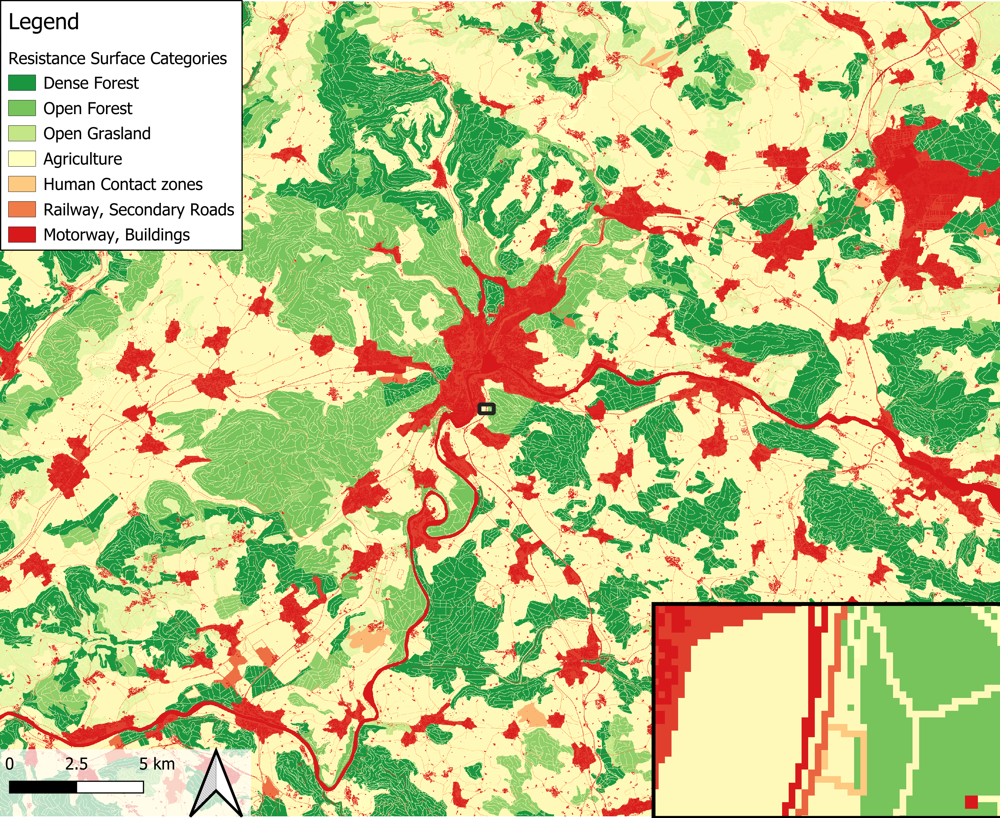
Observations:
Fragmented
Bifurcated
Anthropogenic
Connectivity Network

Observations:
Dendritic (Tree-like)
Narrow strips
Fragile
Bottlenecked
Critical Bottlenecks
Definition: Top 5% movement intensity intersections with High Resistance (Cost ≥ 3000).
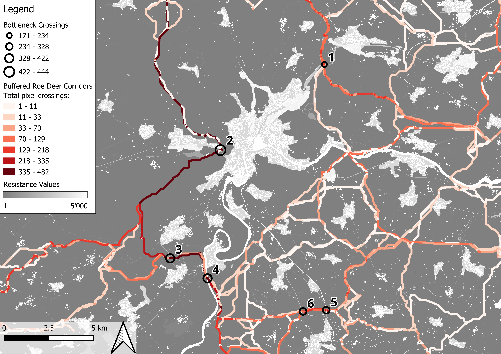
Modeled least-cost corridors, highlighting Critical Bottlenecks
4. Discussion
The “Western Corridor” (Klettgau)
Significance: The only functional North-South link bypassing the city to the West.
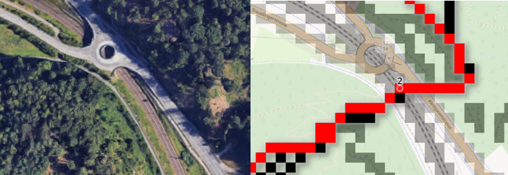
Detail of Bottleneck 2 (Beringen), where model predictions conflict with topographic reality (cliffs).
Model Validation: “Ground Truthing”
Bottleneck 5: Schneitenberg
The model predicted an existing wildlife overpass.
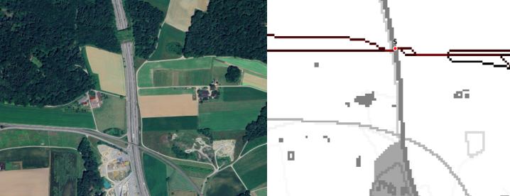
Validation of the Model by predicting the location of the Schneitenberg Wildlife Overpass
5. Conclusion
Key Takeaways
Fragile Network: Connectivity relies on a few high-intensity bottlenecks.
The “Western Corridor”: The Klettgau region is a critical region because of the large agricultural area.
Actionable Data:
- Protect: The Western Corridor (limit urban and agricultural sprawl).
- Mitigate: Building Wildlife Overpasses.
- Restore: Increase “stepping stones” (hedges) in the Klettgau agricultural area.
Limitations and Future Improvements
- Methodological Improvements:
- Integrate Digital Elevation Model (DEM) to account for slope.
- Dynamic Movement Modeling (Day vs. Night).
- Reproducibility:
- Fix Protocolbuffer Binary Format (.pbf) inconsistencies.
- Access CLC Data automatically.
- The Python pipeline should be fully automated and transferable to other Regions.
Thank you for your attention.
Questions?
Bonus: Boundary Topology
The “Floor” Convention (GDAL)
- Logic:
rasterio(via GDAL) uses floor-based indexing relative to the origin (Top-Left). - The Formula: \[Col = \lfloor \frac{x_{point} - x_{origin}}{pixel\_width} \rfloor\]
- Edge Case Rule:
- Therefore, a coordinate falling exactly on the grid line is assigned to the Right (East) or Bottom (South).
Source: GDAL Raster Data Model
Feedback
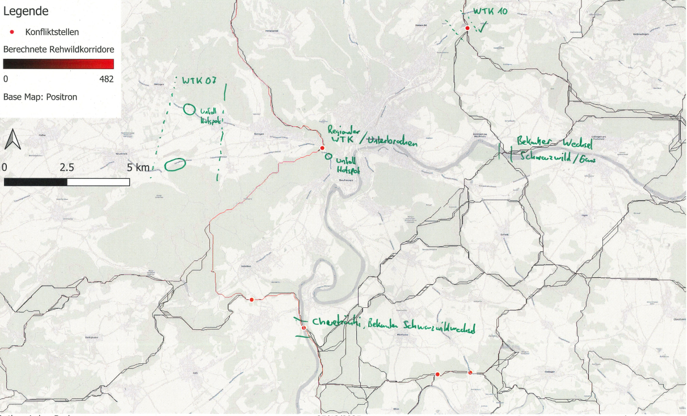
Validation of identified bottlenecks by Thomas Küng (Amt für Jagd und Fischerei, Canton Schaffhausen).